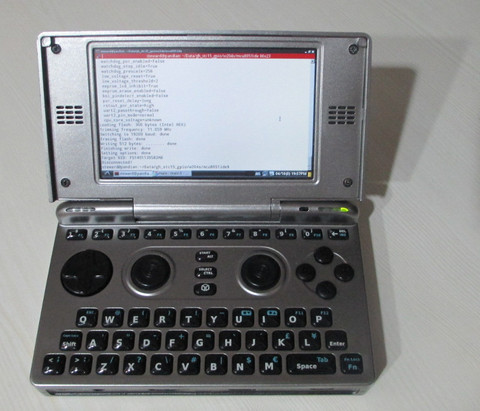
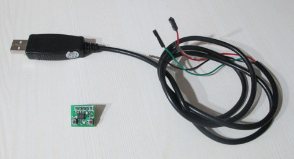
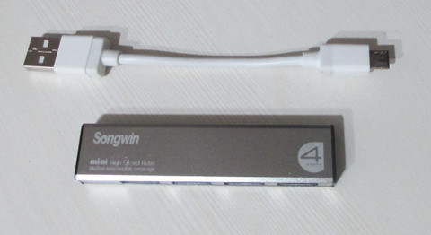
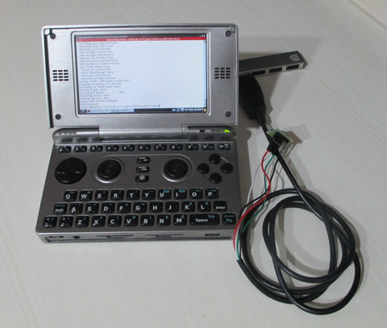
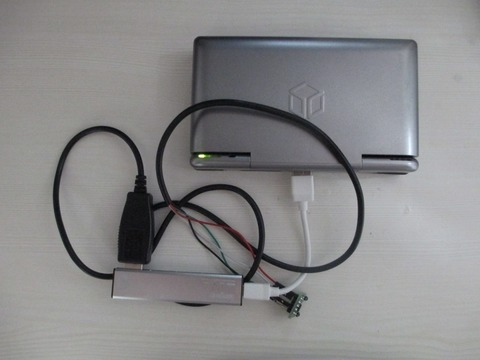
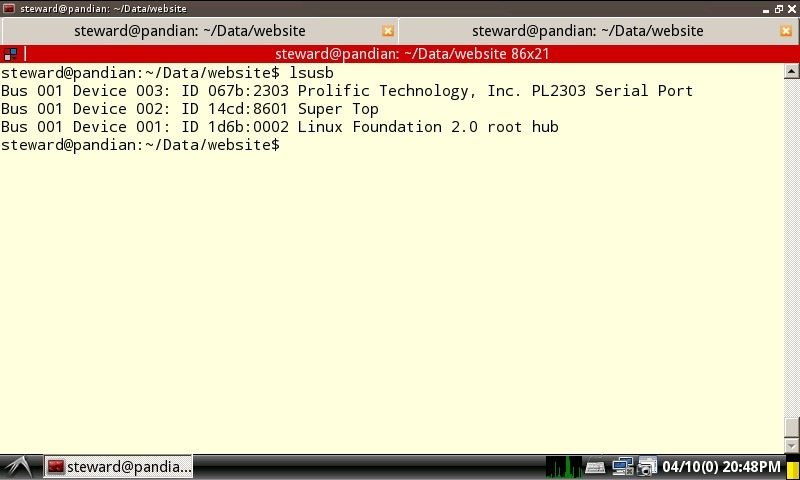
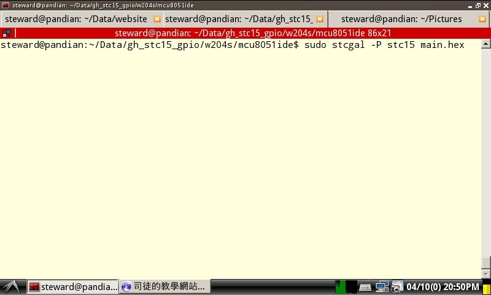
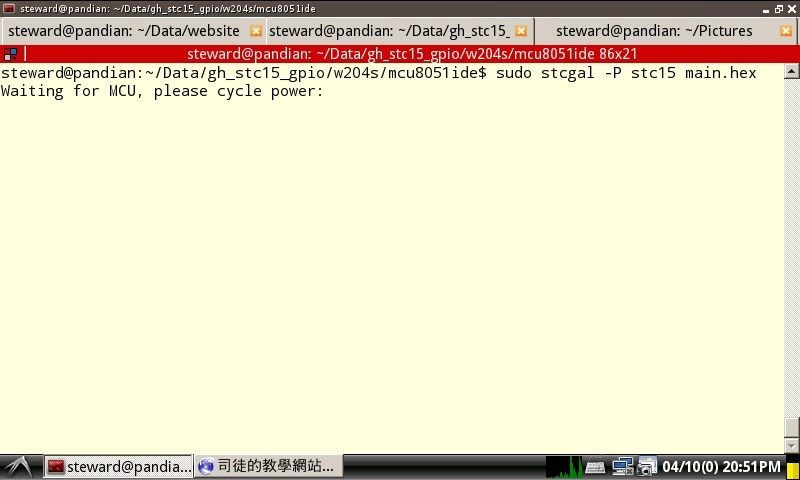
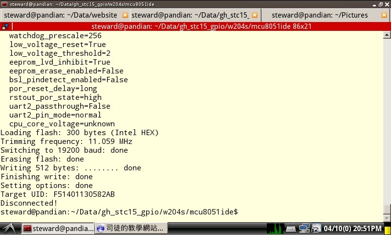

STC15W104
使用stcgal燒録程式(Pandora)
安裝Debian系統(Pandian)

USB轉TTL RS-232(PL2303)以及STC15W204S開發板

由於Pandora的USB Host在連接低速USB裝置時，Pandora會無法辨別該USB裝置，因此，司徒使用一個USB 2.0 Hub當作橋接

連接完成後的樣子


由於stcgal需要python3的套件，因此，還需要安裝如下套件：
$ sudo apt-get install python3 python3-setuptools
下載stcgal並安裝
$ git clone https://github.com/grigorig/stcgal.git $ cd stcgal $ ./setup.py build $ sudo ./setup.py install
Enable USB host mode
$ sudo pdcmd USBHostTrigger $ lsusb

執行燒録指令：
$ sudo stcgal -P stc15 main.hex

執行到該指令時，Reset開發板

燒録完成

Console Log：
$ sudo stcgal -P stc15 main.hex Waiting for MCU, please cycle power: done Target model: Name: STC15W204S Magic: F514 Code flash: 4.0 KB EEPROM flash: 1.0 KB Target frequency: 11.068 MHz Target BSL version: 7.2.4T Target wakeup frequency: 36.317 KHz Target options: reset_pin_enabled=False clock_source=internal clock_gain=high watchdog_por_enabled=False watchdog_stop_idle=True watchdog_prescale=256 low_voltage_reset=True low_voltage_threshold=2 eeprom_lvd_inhibit=True eeprom_erase_enabled=False bsl_pindetect_enabled=False por_reset_delay=long rstout_por_state=high uart2_passthrough=False uart2_pin_mode=normal cpu_core_voltage=unknown Loading flash: 300 bytes (Intel HEX) Trimming frequency: 11.068 MHz Switching to 19200 baud: done Erasing flash: done Writing 512 bytes: ........ done Finishing write: done Setting options: done Target UID: F51401130582AB Disconnected!